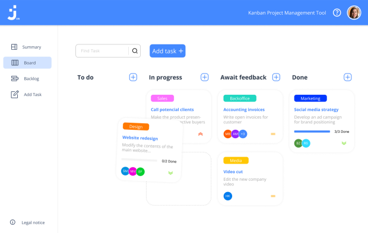

<section class="project">
    <div class="wrapper">
        <div class="content">
            <div class="left pos-rel">
                
                <div class="frame">
                    <div class="pos-rel">
                        
                    </div>
                </div>
            </div>
            <div class="right">
                <div class="nr pos-rel">
                    <span>01/05</span>
                </div>
                <div class="info">
                    <h3>Join</h3>
                    <span>Angular | TypeScript | HTML CSS | Firebase</span>
                    <p>Task manager inspired by the Kanban System. Create and organize tasks using drag and drop
                        functions, assign users and categories.
                    </p>
                    <div class="btn-container">
                        <a href="#" class="btn">Github</a>
                        <a href="#" class="btn">Live</a>
                    </div>
                </div>
            </div>
        </div>
    </div>
</section>